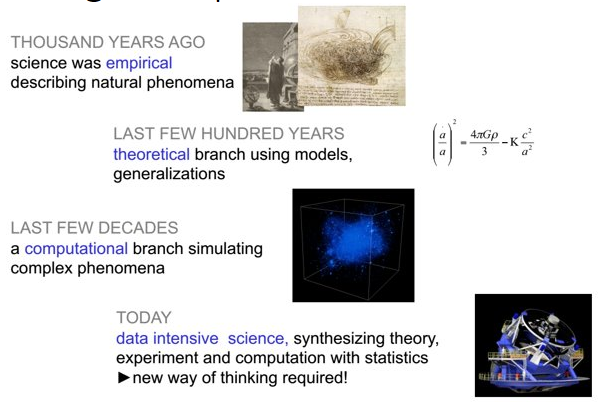
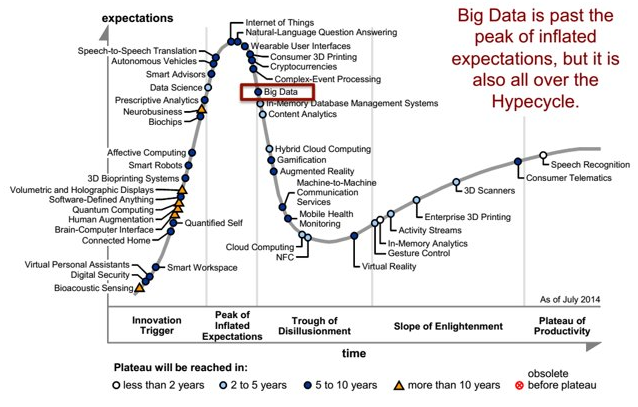
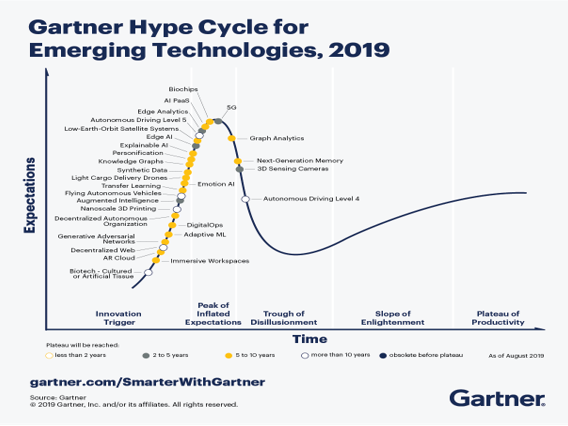

Introduction to Big Data
Contents
Introduction to Big Data#
1. Terminologies#
Big data problems: not only the processing power, but the size of the data is also the limiting factor in being able to find a timely solution.
Big Data (Industry, Social Sciences)
Input data carry characteristics of Big Data (the 4V).
Computational process is simple and straightforward, with minimal intermediate data being generated.
Data Intensive Computing (Natural Sciences)
Input data may or may not be big data.
Computational process produces massive and complex intermediate data that needs to be analyzed during the process.
2. Big Data in Science (Data-enabled Science)#
{kind=link}
Scientific process:
empirical
theoretical
computational
data-enabled/data-intensive science (the fourth pillar of scientific discovery).
Big data analytics in science and engineering for data sets that are:
Too big
Too complex
Too fast (streaming)
Too noisy
Too heterogeneous
{kind=link}
3. Big Data in Industry#
Old statistics
In 2008-2009:
Google processed 20PB a day.
Facebook had 2.5PB of user data + 15TB/day.
eBay had 6.5PB of user data + 50TB/day.
In 2010-2011:
Facebook had 400M users / 125PB of user data.
eBay had 10PB of user data in 2010, expected to double this number in 2011
In 2012-2013:
Facebook had 900M users
Twitter had 400M Tweets/day
We don’t see this kind of statistics collected anymore because it has become the norm.
Newer (and different) statistics:
53% of companies are using big data analytics today
Data warehouse optimization, customer/social analysis, predictive maintenance, clickstream analytics, fraud detectiton, and Internet of Things.
Spark, MapReduce, and Yarn are among the most popular framework.
People don’t explicitly talk about Big Data anymore:
Gartner Hype Cycle 2014#
{kind=link}
Gartner Hype Cycle 2019#
{kind=link}
Gartner Hype Cycle 2020#

4. The Vs of Big Data#
Used to be four: Volume, Velocity, Variety, Veracity.
Other Vs are added over time.
Volume: the size of the files used to archive and spread data.
Velocity: the speed with which data is generated and processed.
Variety: formats and purposes of data, which may include objects as different as samples of animal tissue, free-text observations, humidity measurements, GPS coordinates, and the results of blood tests.
Veracity: the extent to which the quality and reliability of big data can be guaranteed. Data with high volume, velocity and variety are at significant risk of containing inaccuracies, errors and unaccounted-for bias.
Validity: the selection of appropriate data with respect to the intended use. The choice of a specific dataset as evidence base requires adequate and explicit justification, including recourse to relevant background knowledge to ground the identification of what counts as data in that context.
Volatility: the extent to which data can be relied upon to remain available, accessible and re-interpretable despite changes in archival technologies. This is significant given the tendency of formats and tools used to generate and analyse data to become obsolete, and the efforts required to update data infrastructures so as to guarantee data access in the long term.
Value: the multifaceted forms of significance attributed to big data by different sections of society, which depend as much on the intended use of the data as on historical, social and geographical circumstances.
5. Programming paradigm for big data#
Multi-faceted challenges:
Require not only parallel computation but also parallel data processing.
New computational tools and strategies.
New data intensive scalable architectures.
Science is moving increasingly from hypothesis-driven to data-driven discoveries.
Industry is at a stage where big data infrastructures are integrated and big data sets are beginning to be analyzed to produce business insights.
Example general paradigm:
{kind=link}
It is difficult to write parallel programs
Difficult in converting algorithms from serial to parallel.
Difficult in identifying different ways that the program can fail.
No reliable way to detect failure of a process.
It is even more difficult to write parallel programs at large scale
Same set of errors, but scale up with size.
It is even more difficult to debug large scale parallel programs
What if the program doesn’t fail but only produce incorrect results?
6. Data-intensive approach#
Scale “out”, not “up”
It is easier and cheaper to add nodes to an existing cluster than to build a faster cluster.
Move computation to the data
Reduce data movement.
Sequential processing, avoid random access
Reduce seek movement on disks.
Seamless scalability